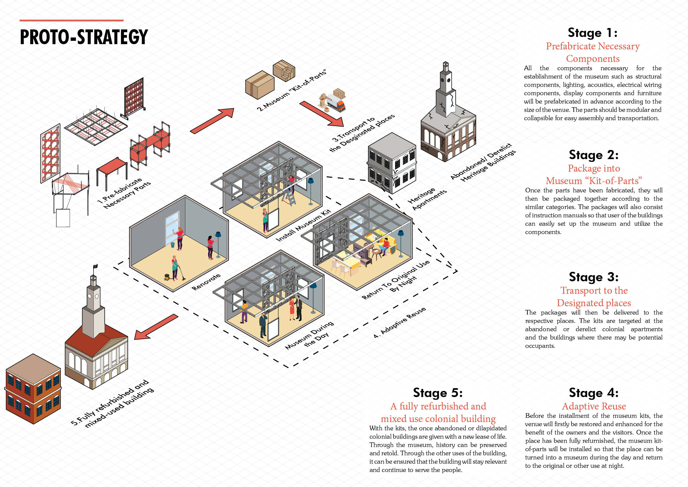

The Revival of A Neglected Colonial Past: Yangon, Myanmar
Summary
Today, when one walks down the streets of downtown Yangon, the person will likely catch the glimpse of many moss-covered, weather-stained early-20th Century facades of the historic colonial buildings that are either abandoned or occupied with tenants that take little or no effort to maintain them. In fact, this is the condition of the majority of the colonial buildings in Yangon that used to be the testaments of the ‘golden’ period of colonial Burma.After decades of military rule, when Myanmar finally opened its doors to the world in 2011, these colonial buildings face the threat of being demolished and replaced to give way for urbanization.Thus, there is a need to preserve this colonial heritage to remind ourselves of our past glamour that our ancestors used to live in.When it comes to the conservation, we must ask ourselves, how do we ensure that we still continue to preserve the colonial heritage while promoting the modernization of Yangon in an architecturally sensitive way? How do we inject life into the dilapidating buildings so that they remain relevant and even contribute to Modern Yangon?The goal of this thesis is to explore flexible museum typology using kit-of parts as a more sustainable solution for revitalization of the heritage homes and buildings where the buildings are able to adapt to the occupants’ needs and wants. This new museum-structure-reuse-project proposal hopes to serve as a model to inspire future conservation works in other heritage buildings in order to save the crumbling Burmese Colonial Heritage.
About Me
Born in Myanmar and raised in Singapore, I have always been intrigued by different architectural styles and their defining characteristics at different places. I am always facinated to see an ecletic mix of buildings and how they stand harminoulsy throughout the course of time. As an aspiring designer,I believe in a sustainable heritage conservation where old buildings are given a new lease of life so that they remain relevant and contribute back to the society. I beleive, heritage conservation is not just about saving bricks, but about saving the layers and layers of information about our lives and those of our ancestors.Name
Shoon Lei Khin
Mentor
Daniel Whittaker
Typology
Conservation,
Re-adaptation,
Retrofitting
Site Location
Yangon

![]()
![]()

Introduction
Today, 35% of downtown Yangon (around 1800 buildings) were destroyed between 1990 and 2011 to make way for new development projects, and only 189 buildings are protected by the municipal government throughout all of Yangon.There are numerous reasons which drive the buildings to be in such a critical state. Decades of poltical and economical turbulence greatly weakened the country's wealth and growth, making the protection of the colonial buildings difficult. When Myanmar finally opened up to the world in 2011 after years of military rule and diplomatic isolation, foreign investments sprung in, increasing the demand for residential and commercial spaces. Lack of proper conservation managements plans and heritage protection force many heritage buildings to fall into a state of negligence or risk getting demolished. Legal complexities such as land ownership issues and lease agreements of the century-old colonial buildings discourage and impede the revitalisaton of them.

Colonial Downtown District
Many of the grand structures were built during the colonial era which some of them are still standing and functioning today. Many of them are found in the colonial downtown district in Yangon, which is the focused area of research for this thesis. The district is also known as central business district of Yangon.Downtown Conservation Area was first designated to be a focused area of heritage conservation in 2012 by the Yangon Heritage Trust after assessing over 3000 buildings.The downtown district has the dense concentration of significant colonial heritage places and it is also the place where it received the high development pressure. Moreover, it is also the place where British first laid out the east-west grid,with the Sule Pagoda in the centre, to facilitate the city growth during the century-long colonial rule. It has since then developed into Yangon’s Central Business District, where there is a unique mix of colonial heritage along with high-rise modern commercial and residential infrastructure.


Why Museum?
Apart from museums being great educational tools for the people, the museums in Yangon are ,sadly, in need of a major transformation as well. Most of the exhibits are displayed in outdated fashion and poorly lit with inadequately labelled explanations. There is also a lack in the varieties of programs that cater to the different generations. So here is the great opportunity to convert the colonial buildings into museums that are adaptable and relatable to the people.





The Ceiling Grid
Unlike the traditional ones, this ceiling grid has metal sliders with cable tension wires attached in the tees which allows for the flexible layout and space arrangements in a confined space. The ceiling grid can be configured into different patterns found in the local Burmese culture to inject the Burmese cultural characteristics into these buildings and also to appeal and relate better to the locals. With this grid, many of the space dividers such and hanging panels, curtain and the wall panels can be attached to create different types of spaces with varying sizes and uses.


Modular Furniture System
Due to the versatile nature of the spaces created, the furniture used will also have to be multipurpose and modular that can be easily dismantled. The furniture must also be easy to build, without any special tools or technical expertise required. Thus, the furniture will utilise the different sets of joints that will allow for different configurations and forms.Similarly to the ceiling grid, patterns found in the indigenous Burmese culture can also be incorporated in the design of the components in the kit of parts. The kit will also come together with the user manual guide for easy and quick assembly without special tools and technical expertise.


So how does the entire strategy work in reality?